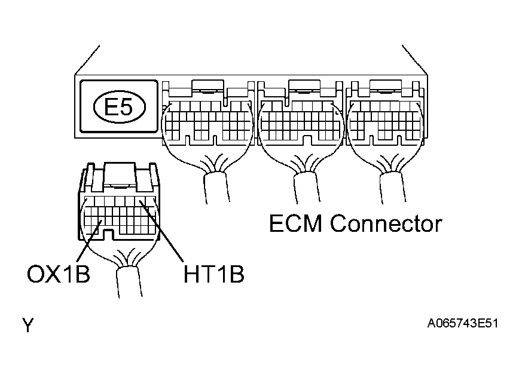

Inspection Procedure
HINT:
Malfunctioning areas can be identified by performing the A/F CONTROL function provided in the ACTIVE TEST. The A/F CONTROL function can help to determine whether the Heated Oxygen (HO2) sensors and other potential trouble areas are malfunctioning.
The following instructions describe how to conduct the A/F CONTROL operation using the intelligent tester.
- Connect the intelligent tester to the DLC3.
- Start the engine and turn the tester ON.
- Warm up the engine at an engine speed of 2,500 rpm for approximately 90 seconds.
- Enter the following menus: DIAGNOSIS / ENHANCED OBD II / ACTIVE TEST / A/F CONTROL.
- Perform the A/F CONTROL operation with the engine in an idling condition (press the RIGHT or LEFT button to change the fuel injection volume).
- Monitor the voltage output of the HO2 sensors (O2S B1S1 and O2S B1S2) displayed on the tester.
HINT:
- The A/F CONTROL operation lowers the fuel injection volume by 12.5% or increases the injection volume by 25%.
- Each sensor reacts in accordance with increases and decreases in the fuel injection volume.
Standard
| Tester Display (Sensor) | Injection Volumes | Status | Voltages |
|---|---|---|---|
| O2S B1S1 (Front HO2 Sensor) | +25% | Rich | More than 0.55 |
| O2S B1S1 (Front HO2 Sensor) | -12.5% | Lean | Less than 0.4 |
| O2S B1S2 (Rear HO2 Sensor) | +25% | Rich | More than 0.5 |
| O2S B1S2 (Rear HO2 Sensor) | -12.5% | Lean | Less than 0.4 |
| Case | Front HO2 Sensor (Sensor 1) Output Voltage | Rear HO2 Sensor (Sensor 2) Output Voltage | Main Suspected Trouble Area | ||
|---|---|---|---|---|---|
| 1 | Injection Volume +25% -12.5% |
Injection Volume +25% -12.5% |
- | ||
| Output Voltage More than 0.55 V Less than 0.4 V | Output Voltage More than 0.55 V Less than 0.4 V | ||||
| 2 | Injection Volume +25% -12.5% |
Injection Volume +25% -12.5% |
|
||
| Output Voltage Almost no reaction | Output Voltage More than 0.55 V Less than 0.4 V | ||||
| 3 | Injection Volume +25% -12.5% |
Injection Volume +25% -12.5% |
|
||
| Output Voltage More than 0.55 V Less than 0.4 V | Output Voltage Almost no reaction | ||||
| 4 | Injection Volume +25% -12.5% |
Injection Volume +25% -12.5% |
|
||
| Output Voltage Almost no reaction | Output Voltage Almost no reaction | ||||
- Following the A/F CONTROL procedure enables technicians to check and graph the voltage outputs of both the front and rear HO2 sensors.
- To display the graph, enter the following menus on the tester: DIAGNOSIS / ENHANCED OBD II / ACTIVE TEST/ A/F CONTROL / USER DATA / O2S B1S1 and O2S B1S2; then press the YES button and ENTER button followed by the F4 button.NOTE: If the vehicle is short of fuel, the air-fuel ratio becomes lean, HO2 sensor DTCs are recorded, and the ECM illuminates the MIL.
HINT:
- If other DTCs relating to different systems that have terminal E2 as the ground terminal are output simultaneously, terminal E2 may have an open circuit.
- Read freeze frame data using the intelligent tester. Freeze frame data records the engine condition when malfunctions are detected. When troubleshooting, freeze frame data can help determine if the vehicle was moving or stationary, if the engine was warmed up or not, if the air-fuel ratio was lean or rich, and other data from the time the malfunction occurred.
- A high HO2 sensor (sensor 1) voltage (0.55 V or more) could be caused by a rich air fuel mixture. Check for conditions that would cause the engine to run rich.
- A low HO2 sensor (sensor 1) voltage (0.4 V or less) could be caused by a lean air fuel mixture. Check for conditions that would cause the engine to run lean.
- CHECK ANY OTHER DTCS OUTPUT (IN ADDITION TO DTC P0136, P0138 AND/OR P0139)
- Connect the intelligent tester to the DLC3.
- Turn the ignition switch ON and turn the tester ON.
- Enter the following menus: DIAGNOSIS / ENHANCED OBD II / DTC INFO / CURRENT CODES.
- Read DTCs.
Result
RESULTDisplay (DTC output) Proceed to P0136, P0138 and/or P0139 A P0136, P0138 and/or P0139, and other DTCs B HINT:
If any DTCs other than P0136, P0138 and/or P0139 are output, troubleshoot those DTCs first.
B: GO TO DTC CHART
A: Go to Next Step
- READ VALUE OF INTELLIGENT TESTER (OUTPUT VOLTAGE OF HEATED OXYGEN SENSOR)
- Connect the intelligent tester to the DLC3.
- Turn the ignition switch ON and turn the tester ON.
- Start the engine.
- Enter the following menus: DIAGNOSIS / ENHANCED OBD II / DATA LIST / PRIMARY / O2S B1S2 and ENGINE SPD.
- Warm up the engine.
- Run the engine at an engine speed of 2,500 rpm for 3 minutes.
- Rev the engine up to 4,000 rpm 3 times using the accelerator pedal.
- Read the output voltage of the rear Heated Oxygen (HO2) sensor displayed on the tester when the engine speed is suddenly increased.
Standard voltage: Rear HO2 sensor voltage output fluctuates between less than 0.4 V and more than 0.55 V.
OK: Go to step 6
NG: Go to Next Step
- INSPECT HEATED OXYGEN SENSOR (HEATER RESISTANCE)
- Disconnect the H7 HO2 sensor connector.
- Measure the resistance of the HO2 sensor connector.
Standard resistance
TESTER CONNECTION - SPECIFIED CONDITIONTester Connection Specified Condition HT (H7-1) - +B (H7-2) 11 to 16 Ω at 20 °C (68 °F) HT (H7-1) - E1 (H7-4) 10 kΩ or higher
NG: REPLACE HEATED OXYGEN SENSOR
OK: Go to Next Step
- INSPECT EFI RELAY (Marking EFI)
- Remove the EFI relay from the engine room relay block.
- Measure the resistance of the EFI relay.
Standard resistance
TESTER CONNECTION - SPECIFIED CONDITIONTester Connection Specified Condition 3 - 5 10 kΩ or higher 3 - 5 Below 1 Ω (When battery voltage is applied to terminals 1 and 2)
NG: REPLACE EFI RELAY
OK: Go to Next Step
- CHECK HARNESS AND CONNECTOR (HEATED OXYGEN SENSOR - ECM)
- Disconnect the H7 HO2 sensor connector.
- Disconnect the E5 ECM connector.
- Measure the resistance of the wire harness side connectors.
Standard resistance (Check for open)
TESTER CONNECTION - SPECIFIED CONDITIONTester Connection Specified Condition HT (H7-1) - HT1B (E5-2) Below 1 Ω OX (H7-3) - OX1B (E5-25) Below 1 Ω Standard resistance (Check for short)
TESTER CONNECTION - SPECIFIED CONDITIONTester Connection Specified Condition HT (H7-1) or HT1B (E5-2) - Body ground 10 kΩ or higher OX (H7-3) or OX1B (E5-25) - Body ground 10 kΩ or higher 
Courtesy of © TOYOTA, LICENSE AGREEMENT TMS1002
NG: REPAIR OR REPLACE HARNESS OR CONNECTOR
OK: REPLACE HEATED OXYGEN SENSOR
- PERFORM CONFIRMATION DRIVING PATTERN
NEXT
- CHECK WHETHER DTC OUTPUT RECURS (DTC P0136, P0138 AND/OR P0139)
- Read DTCs using the intelligent tester.
- If using the intelligent tester, enter the following menus: DIAGNOSIS / ENHANCED OBD II / DTC INFO / CURRENT CODES.
Result
RESULTDisplay (DTC output) Proceed to P0136, P0138 and/or P0139 A No output B
B: CHECK FOR INTERMITTENT PROBLEMS
A: REPLACE HEATED OXYGEN SENSOR